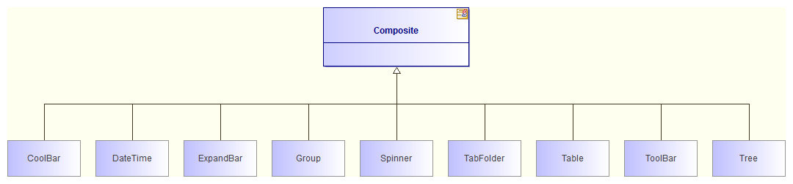

Inheritance diagrams¶
The aim of this automatic diagram is to show where a class is situated within its inheritance graph.
Contents¶
- Class C itself.
- C’s parent classes and interfaces.
- The classes derived from C.
- The implementation and inheritance links.
Applicable elements¶
Inheritance diagrams can be created on any Classifier.
Layout¶
- Class C is placed in the center of the diagram.
- C’s parent classes and interface:
- are placed above C.
- are viewed in “simple” mode.
- are exactly the same size and are horizontally aligned.
- C’s child classes and interface:
- are placed below C.
- are viewed in “simple” mode.
- are exactly the same size and are horizontally aligned.
Note: All elements present in this diagram have a specific associated style.
Example¶
